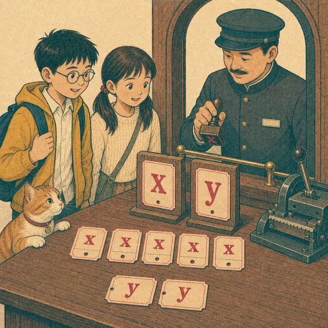
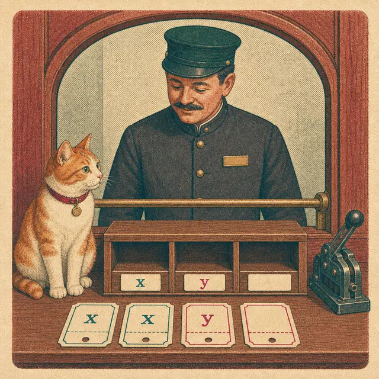
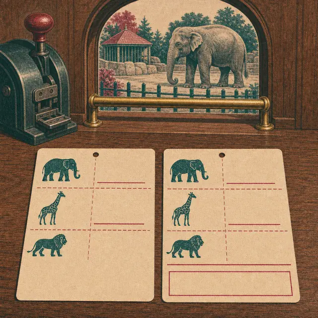
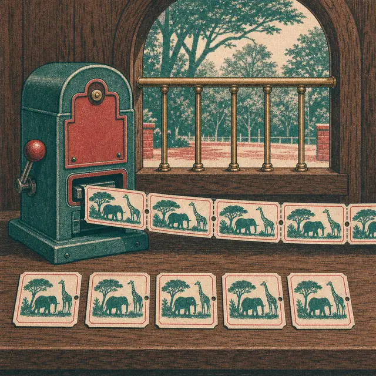

課前暖身漫畫：售票口沒有貼價目表
動物園的售票窗口前排著隊，木頭窗框上只掛著「全票」「優待票」兩塊牌子，價錢那一欄是空的——今天的票價還沒印好。前面那家人買了 \(5\) 張全票、\(2\) 張優待票；後面這家買了 \(3\) 張全票、\(1\) 張優待票。小翊想算算兩家各付多少，卻卡在同一個地方：兩種票的價錢都不知道。第一冊那招「不知道就給它一個代號」還能用嗎？售票員從抽屜拿出兩枚橡皮章，一枚刻著 \(x\)、一枚刻著 \(y\)，往兩塊空牌子上各蓋一下：全票每張 \(x\) 元、優待票每張 \(y\) 元。空欄一被填上，票根就自己算得出來了——前面那家 \((5x+2y)\) 元，後面那家照同樣的方法算，是 \((3x+y)\) 元。一個代號不夠用，那就用兩個。
重點 1：二元一次式——兩種數量，兩個符號
重點整理與敘述
- 一個符號只能代表一種數量。題目裡出現兩種不知道的數量時，就要用兩個不同的符號去分別代表它們，最常用的是 \(x\) 和 \(y\)。
- 二元一次式的定義：含有兩種文字符號（二元），且兩種文字符號的次數都是 \(1\)（一次）的代數式。
- 售票口的列式：設全票每張 \(x\) 元、優待票每張 \(y\) 元，則
- 買 \(5\) 張全票花 \(5x\) 元、\(2\) 張優待票花 \(2y\) 元，共 \((5x+2y)\) 元。
- 買 \(3\) 張全票花 \(3x\) 元、\(1\) 張優待票花 \(y\) 元，共 \((3x+y)\) 元。
- 係數是 \(1\) 就不寫：\(1\) 張優待票寫成 \(y\)，不寫 \(1y\)。這條規則第一冊就學過，二元照舊。
- 順序要跟符號的定義對上，這是最常見的失分點。若設蘋果每個 \(x\) 元、芭樂每個 \(y\) 元，那麼「\(4\) 個蘋果與 \(3\) 個芭樂」是 \((4x+3y)\) 元，不是 \((3x+4y)\) 元。寫完回頭問一次：\(x\) 到底是誰的價錢？
- 怎樣就不算二元一次式：
- \(3x+5\)：只有一種文字符號，是一元一次式。
- \(x^2+y\)：\(x\) 的次數是 \(2\)，不是一次。
- \(2x+3y=12\)：多了等號，那已經是方程式（重點 6 會談），不是「式」。
- 寫下 \(x\) 的那一刻，未知的東西就變得可以計算。這是整節、也是整章的起手式。
| 情境 | 設誰是 \(x\)、誰是 \(y\) | 列出的二元一次式 |
|---|---|---|
| \(5\) 張全票、\(2\) 張優待票 | 全票 \(x\) 元、優待票 \(y\) 元 | \(5x+2y\) |
| \(3\) 張全票、\(1\) 張優待票 | 同上 | \(3x+y\) |
| \(4\) 個蘋果、\(3\) 個芭樂 | 蘋果 \(x\) 元、芭樂 \(y\) 元 | \(4x+3y\) |
| \(4\) 個蘋果、\(3\) 個芭樂 | 芭樂 \(x\) 元、蘋果 \(y\) 元 | \(3x+4y\) |

視覺互動探索：售票口列式機
選一個情境，拉兩支滑桿決定各買幾張。票根一張張排出來，右邊的算式就跟著長出來：
形成性評量 (二元一次式)
Q1. 文具店的鉛筆每枝 \(x\) 元、原子筆每枝 \(y\) 元。小玉買了 \(9\) 枝鉛筆和 \(7\) 枝原子筆，共花了多少元？
解析：答案為 A。題目先說「鉛筆每枝 \(x\) 元」，所以 \(x\) 是鉛筆的價錢：
\[\begin{aligned}
& 9 \text{ 枝鉛筆} = 9 \times x = 9x \text{ 元} \\
&\quad 7 \text{ 枝原子筆} = 7 \times y = 7y \text{ 元} \\
&\quad \text{合計} = (9x+7y) \text{ 元}
\end{aligned}\]
B 是最常見的錯誤——把數字的順序照抄成 \(7x+9y\)，等於偷偷把 \(x\) 換成原子筆的價錢。
C、D 錯在把兩種東西相乘。\(x\) 和 \(y\) 是兩種不同的價錢，各自乘上自己的數量後相加，不會乘在一起。
Q2. 下列四個式子中，哪一個是二元一次式？
解析：答案為 C。二元一次式要同時滿足三件事：兩種文字符號、次數都是 \(1\)、沒有等號。
C 有 \(a\)、\(b\) 兩種符號，次數都是 \(1\)，也沒有等號，符合。（文字符號不一定要用 \(x\)、\(y\)，用 \(a\)、\(b\) 一樣算。）
A 只有 \(a\) 一種符號，是一元一次式。
B 的 \(a^2\) 次數是 \(2\)，不是一次。
D 有等號，它是二元一次方程式，不是「式」。
重點 2：二元一次式的值——兩個數一起代進去
重點整理與敘述
- 定義：當二元一次式中的文字符號都代表數時，這個二元一次式也代表一個數，稱為二元一次式的值。
- 票價公布之後：小妍花了 \((3x+y)\) 元買 \(3\) 張全票和 \(1\) 張優待票。 \[\begin{aligned} & x = 60,\ y = 30 \\ &\quad \Rightarrow 3x+y \\ &\qquad = 3 \times 60 + 30 = 210 \\ & x = 120,\ y = 60 \\ &\quad \Rightarrow 3x+y \\ &\qquad = 3 \times 120 + 60 = 420 \end{aligned}\] 同一個式子，代不同的數就得到不同的值。
- 代入時要注意的三件事：
- 負數一定要加括號：\(y=-3\) 代入 \(5y\) 要寫 \(5 \times (-3)\)，不能寫成 \(5 \times -3\)。
- 係數是乘法：\(3x\) 是 \(3 \times x\)，不是 \(3+x\)。
- 常數項不動：\(x-2y+3\) 裡的 \(+3\) 不必代任何東西，照抄。
- 兩個未知數要一起代，不能只代一個。這一步是第一冊「求代數式的值」的延伸，難的地方就在要同時盯住兩個符號和它們各自的正負。
- 用表格整理：同一個式子要代很多組數時，把 \(x\)、\(y\) 和算出來的值列成一張表，會比一條條寫清楚得多——這張表在下一章畫圖形時還會再用到。
| \(x\) | \(y\) | \(3x+5y\) | \(x-2y+3\) |
|---|---|---|---|
| \(2\) | \(0\) | \(6\) | \(5\) |
| \(2\) | \(-3\) | \(-9\) | \(11\) |
| \(-0.5\) | \(0.2\) | \(-0.5\) | \(2.1\) |
視覺互動探索：代入計算台
選一個式子，把 \(x\) 和 \(y\) 兩張票根調到想要的數字，看每一項各自算成多少：
形成性評量 (二元一次式的值)
Q1. 當 \(x=-2\)、\(y=3\) 時，二元一次式 \(5x-2y+4\) 的值是多少？
解析：答案為 A。\(x\) 是負數，代入時務必加括號：
\[\begin{aligned}
& 5x-2y+4 \\
&= 5 \times (-2) - 2 \times 3 + 4 \\
&= -10 - 6 + 4 \\
&= -12
\end{aligned}\]
D 錯在把 \(5 \times (-2)\) 算成 \(+10\)（漏掉負號）。
B 錯在把常數項 \(+4\) 也拿去乘或漏掉了。常數項不必代，照抄就好。
Q2. 當 \(x=\dfrac{1}{2}\)、\(y=-\dfrac{1}{3}\) 時，二元一次式 \(4x+6y\) 的值是多少？
解析：答案為 A。分數代入的做法跟整數完全一樣，一樣要記得加括號：
\[\begin{aligned}
& 4x+6y \\
&= 4 \times \frac{1}{2} + 6 \times \left(-\frac{1}{3}\right) \\
&= 2 + (-2) \\
&= 0
\end{aligned}\]
兩項恰好互為相反數，加起來是 \(0\)。
B 錯在把第二項的負號丟掉，算成 \(2+2\)。
D 錯在把 \(x\) 和 \(y\) 直接相乘。\(4x\) 和 \(6y\) 是兩項，中間是加號。
重點 3：項、係數與同類項——\(x\) 項和 \(y\) 項不能併
重點整理與敘述
- 項：在二元一次式中，加號（\(+\)）所隔開的每一部分都稱為這個式子的項。以 \(3x+y+2\) 為例，它的項是 \(3x\)、\(y\)、\(2\)。項可能含文字符號（\(3x\)、\(y\)），也可能是不含文字符號的數（\(2\)）。
- 係數與常數項：在 \(3x+y+2\) 中，
- \(3x\) 是 \(x\) 項，\(3\) 是 \(x\) 項的係數；
- \(y\) 是 \(y\) 項，\(1\) 是 \(y\) 項的係數（沒寫出來的 \(1\) 也算）；
- \(2\) 是常數項。
- 有減號時先改寫成加法，係數的正負才看得清楚： \[\begin{aligned} & 5x-3y+1 \\ &= 5x + (-3y) + 1 \end{aligned}\] 所以 \(x\) 項係數是 \(5\)、\(y\) 項係數是 \(-3\)、常數項是 \(1\)。係數要連同前面的正負號一起讀。
- 同類項：文字符號及次數均相同的項稱為同類項。例如 \(-x\) 和 \(\dfrac{1}{7}x\) 是同類項；\(5y\) 和 \(-6y\) 是同類項；\(-3\) 和 \(\dfrac{1}{8}\) 也是同類項（都是常數項）。
- \(2x\) 和 \(3y\) 不是同類項——文字符號不一樣。這是二元一次式最容易錯的地方：一元的時候只有一種符號，看到項就能併；二元有兩種，要先分家再合併。
- 化簡的規則只有一句：同類項合併，不同類項不能合併。所以 \(4x+3y\) 已經是最簡了，不能寫成 \(7xy\) 或 \(7x\)。
| 二元一次式 | \(x\) 項係數 | \(y\) 項係數 | 常數項 |
|---|---|---|---|
| \(3x+y+2\) | \(3\) | \(1\) | \(2\) |
| \(5x-3y+1\) | \(5\) | \(-3\) | \(1\) |
| \(-x+7y\) | \(-1\) | \(7\) | \(0\) |

視覺互動探索：票根分類箱
選一個式子，按下一步看票根怎麼分家、怎麼合併。滑桿可以改其中一項的係數，觀察它只會影響自己那一箱：
形成性評量 (項、係數與同類項)
Q1. 化簡 \(6x-5y+3-2x+8y-7\)，結果為何？
解析：答案為 A。先把同類項排在一起，再各自合併：
\[\begin{aligned}
& 6x-5y+3-2x+8y-7 \\
&= 6x-2x-5y+8y+3-7 \\
&= 4x+3y-4
\end{aligned}\]
移動項的時候要把它前面的正負號一起帶走：\(-2x\) 搬過去還是 \(-2x\)。
B 錯在常數項算成 \(3+7\)；那個 \(7\) 前面是減號。
C 錯在把減號當成加號合併。
D 錯在把 \(x\) 項和 \(y\) 項併成一項，它們不是同類項。
Q2. 關於二元一次式 \(7x-4y+2\)，下列敘述何者正確？
解析：答案為 B。把減號改寫成加法就看得清楚了：
\[\begin{aligned}
& 7x-4y+2 \\
&= 7x + (-4y) + 2
\end{aligned}\]
所以 \(x\) 項係數是 \(7\)、\(y\) 項係數是 \(-4\)、常數項是 \(2\)。
A 錯在把係數的負號漏掉——這是最常見的失分點。
C 錯：常數項是 \(+2\)，它前面是加號。
D 錯：\(7x\) 和 \(-4y\) 不是同類項，不能相減，這個式子已經是最簡了。
重點 4：去括號與直式計算——減號括號整組翻面
重點整理與敘述
- 去括號規則（第一冊學過，二元完全照舊）：
- 括號前面是加號：直接把括號拿掉，裡面每一項都不變號。
- 括號前面是減號：把括號拿掉時，裡面每一項都要變號。
- 加號的例子： \[\begin{aligned} & (13x-5y)+(4x+3y) \\ &= 13x-5y+4x+3y \\ &= 13x+4x-5y+3y \\ &= 17x-2y \end{aligned}\]
- 減號的例子（注意括號裡三項全部變號）： \[\begin{aligned} & (-x-4y+3)-(3x-6y-4) \\ &= -x-4y+3-3x+6y+4 \\ &= -x-3x-4y+6y+3+4 \\ &= -4x+2y+7 \end{aligned}\]
- 最常見的錯是「只變第一項」：把 \(-(3x-6y-4)\) 寫成 \(-3x-6y-4\)。那個減號要發到括號裡的每一項，一個都不能漏。
- 直式計算：也可以把兩個式子上下排好再一起算，寫法像小學的直式加減。做直式計算時，需先把同類項對齊——\(x\) 項對 \(x\) 項、\(y\) 項對 \(y\) 項、常數對常數，沒有的那一欄留空。
- 直式的減法一樣要整列變號。橫式和直式只是寫法不同，做的是同一件事，答案必須一樣；哪一種順手就用哪一種。
| 原式 | 去括號後 | 說明 |
|---|---|---|
| \(+(2x-3y+1)\) | \(2x-3y+1\) | 每一項都不變 |
| \(-(2x-3y+1)\) | \(-2x+3y-1\) | 三項全部變號 |
| \(-(2x-3y+1)\) | \(-2x-3y+1\) | ✗ 只變第一項，錯 |
視覺互動探索：括號拆解器
切換括號前的正負號，看括號裡三項各自變不變號。也可以切到直式，看同類項怎麼對齊：
形成性評量 (去括號與直式計算)
Q1. 化簡 \((5x-3y)-(2x-7y)\)，結果為何？
解析：答案為 B。第二個括號前面是減號，裡面兩項都要變號：
\[\begin{aligned}
& (5x-3y)-(2x-7y) \\
&= 5x-3y-2x+7y \\
&= 5x-2x-3y+7y \\
&= 3x+4y
\end{aligned}\]
A 錯在 \(-7y\) 沒變號，直接抄成 \(-7y\)——這正是「只變第一項」的典型症狀。
C 錯在把 \(-2x\) 抄成 \(+2x\)（第一項也沒變）。
D 錯在 \(y\) 項的符號算反。
Q2. 小翊用直式計算 \((4x+y-3)-(x-2y+5)\)，他寫成下面這樣，結果得到 \(3x-y-8\)。他錯在哪裡？
\[\begin{aligned}
&\quad\ \ 4x+y-3 \\
&\underline{-)\ \ x-2y+5} \\
&\quad\ \ 3x-y-8
\end{aligned}\]
解析：答案為 C。直式的減法要把整列每一項都變號再相加：
\[\begin{aligned}
& (4x+y-3)-(x-2y+5) \\
&= 4x+y-3-x+2y-5 \\
&= 4x-x+y+2y-3-5 \\
&= 3x+3y-8
\end{aligned}\]
\(y\) 項是 \(1-(-2)=1+2=3\)，不是 \(1-2=-1\)。小翊把 \(-2y\) 的負號當成減號用了兩次，等於只變了一半。
A 錯：答案應是 \(3x+3y-8\)。
B 錯：他的 \(x\) 項、\(y\) 項、常數項確實各自對齊了，對齊不是問題。
D 錯：直式可以做減法，只是減的那一列要整列變號。
重點 5：分配律、多層括號與分數——每一項都要顧到
重點整理與敘述
- 分配律：括號外的數要乘進括號裡的每一項，包括最後那個常數項。 \[\begin{aligned} & a(b+c+d) \\ &= a \times b + a \times c + a \times d \end{aligned}\] \[\begin{aligned} & 3(x+3y-2) \\ &= 3 \times x + 3 \times 3y - 3 \times 2 \\ &= 3x+9y-6 \end{aligned}\]
- 括號外是負數時，每一項都跟著變號： \[\begin{aligned} & 6(x-y)-2(5x-2y+3) \\ &= 6x-6y-10x+4y-6 \\ &= -4x-2y-6 \end{aligned}\]
- 多層括號由內而外：先拆最裡面的小括號，再拆外面的中括號。 \[\begin{aligned} & 5-y+2[4x-(6x+y)] \\ &= 5-y+2[4x-6x-y] \\ &= 5-y+2[-2x-y] \\ &= 5-y-4x-2y \\ &= -4x-3y+5 \end{aligned}\]
- 分數形式：通分之後，分子一定要整組加括號。這是本節最容易出錯的一步： \[\begin{aligned} & \frac{2x-y}{3} - \frac{x+y-1}{2} \\ &= \frac{2(2x-y)}{6} - \frac{3(x+y-1)}{6} \\ &= \frac{2(2x-y) - 3(x+y-1)}{6} \\ &= \frac{4x-2y-3x-3y+3}{6} \\ &= \frac{x-5y+3}{6} \end{aligned}\]
- 減號在前的那個分數，分子每一項都要變號。若把 \(-3(x+y-1)\) 寫成 \(-3x+3y-3\) 就錯了——負號要發給三項，正確是 \(-3x-3y+3\)。
- 檢查的小技巧：化簡完隨便代一組數（例如 \(x=1\)、\(y=1\)）進原式和答案，兩邊的值應該相同。不同就是中間某一步變號變錯了。
視覺互動探索：化簡工作台
選一種化簡類型，按下一步一行一行推。滑桿可以換掉括號外的那個數，看它怎麼發給每一項：
形成性評量 (分配律、多層括號與分數)
Q1. 化簡 \(4(2x-3y+1)-3(x-2y)\)，結果為何？
解析：答案為 A。兩個括號各自用分配律拆開，第二個括號外是 \(-3\)：
\[\begin{aligned}
& 4(2x-3y+1)-3(x-2y) \\
&= 8x-12y+4-3x+6y \\
&= 8x-3x-12y+6y+4 \\
&= 5x-6y+4
\end{aligned}\]
注意 \(-3 \times (-2y) = +6y\)，負負得正。
B 錯在把 \(-3 \times (-2y)\) 算成 \(-6y\)。
C 錯在第二個括號的 \(x\) 沒有乘到 \(-3\)。
D 錯在 \(4 \times 1\) 漏乘，直接抄成 \(1\)。括號裡的常數項也要乘。
Q2. 化簡 \(\dfrac{x-y}{3} - \dfrac{2y-1}{4}\)，結果為何？
解析：答案為 A。通分成分母 \(12\) 之後，兩個分子都要整組加括號：
\[\begin{aligned}
& \frac{x-y}{3} - \frac{2y-1}{4} \\
&= \frac{4(x-y) - 3(2y-1)}{12} \\
&= \frac{4x-4y-6y+3}{12} \\
&= \frac{4x-10y+3}{12}
\end{aligned}\]
關鍵在 \(-3 \times (-1) = +3\)。
B 是本節最經典的錯：把 \(-3(2y-1)\) 寫成 \(-6y-3\)，只讓第一項變號，後面那個 \(-1\) 忘了跟著變成 \(+3\)。
C 錯在 \(y\) 項的符號整個算反。
D 錯在通分時只乘了分母、忘了乘分子。
重點 6：二元一次方程式——經化簡後才算數
重點整理與敘述
- 從式到方程式，只差一句話。前面算出小翊花了 \((5x+2y)\) 元，這只是一個「式」；一旦加上「他總共付了 \(360\) 元」，等號就出現了： \[\begin{aligned} & 5x+2y = 360 \end{aligned}\] 同理，小妍花了 \((3x+y)\) 元、金額為 \(210\) 元，可列 \(3x+y=210\)。
- 二元一次方程式的定義：經化簡後的等式，含有兩種未知數（二元），且兩種未知數的次數都是 \(1\)（一次）。
- 三個條件缺一不可：
- ① 要是等式（有等號）。\(2x+3y\) 沒有等號，只是二元一次式。
- ② 化簡後要剩下兩種未知數。
- ③ 兩種未知數的次數都是 \(1\)。
- 「經化簡後」這四個字是重點，不能只看原式的長相：
- \(2(x+1)=8-3y\) 化簡後是 \(2x+3y=6\)，是二元一次方程式。
- \(3x+2=3x+y\) 化簡後 \(x\) 項互相抵消，只剩 \(y=2\)，只有一種未知數，不是二元一次方程式。
- 列式的做法跟重點 1 一樣，只是最後多寫一個等號和一個總量。例如：鋁罐每公斤 \(32\) 元、寶特瓶每公斤 \(10\) 元，回收鋁罐 \(x\) 公斤、寶特瓶 \(y\) 公斤，
- 回收量共 \(9\) 公斤 \(\Rightarrow x+y=9\)；
- 回收價總計 \(200\) 元 \(\Rightarrow 32x+10y=200\)。
- 同一個情境，看你抓的是哪一個總量，就會列出不同的方程式。抓「數量」得到一條、抓「金額」得到另一條——下一節要把這兩條放在一起解，那就是聯立方程式。
| 式子 | 是二元一次方程式嗎 | 原因 |
|---|---|---|
| \(5x+2y=360\) | 是 | 三個條件都符合 |
| \(2(x+1)=8-3y\) | 是 | 化簡後為 \(2x+3y=6\) |
| \(2x+3y\) | 不是 | 沒有等號，是「式」 |
| \(3x+2=3x+y\) | 不是 | 化簡後只剩 \(y=2\) |
| \(x+y^2=5\) | 不是 | \(y\) 的次數是 \(2\) |

視覺互動探索：三道關卡驗票機
選一個式子，按下一步讓它依序通過三道關卡。三關全過才是二元一次方程式：
形成性評量 (二元一次方程式)
Q1. 早餐店的漢堡一個 \(45\) 元、豆漿一杯 \(20\) 元。老師買了 \(x\) 個漢堡和 \(y\) 杯豆漿，共花了 \(430\) 元。依題意列出的二元一次方程式為何？
解析：答案為 A。\(x\) 是漢堡的個數，一個 \(45\) 元，所以漢堡花了 \(45x\) 元；\(y\) 是豆漿的杯數，一杯 \(20\) 元，花了 \(20y\) 元。兩者相加等於總金額：
\[\begin{aligned}
& 45x+20y = 430
\end{aligned}\]
B 錯在單價配錯了對象。
C 錯在沒有等號，那只是二元一次式，不是方程式。
D 錯在把「\(430\) 元」當成件數。\(x+y\) 算的是總件數，不是總金額。
Q2. 下列四個式子中，哪一個不是二元一次方程式？
解析：答案為 B。它的長相有兩種未知數，但化簡之後 \(y\) 項互相抵消了：
\[\begin{aligned}
& 5x+2y-1 = 2y+9 \\
&\quad 5x+2y-2y = 9+1 \\
&\qquad\qquad\ \ 5x = 10
\end{aligned}\]
只剩下一種未知數 \(x\)，所以它是一元一次方程式。這就是定義裡「經化簡後」四個字要擋的情況。
A 化簡後是 \(3x-y=10\)，符合。
C 的 \(\dfrac{x}{2}\) 就是 \(\dfrac{1}{2}x\)，係數是分數沒關係，次數仍然是 \(1\)，符合。
D 常數項是 \(0\) 也沒關係，兩種未知數次數都是 \(1\)，符合。
重點 7：方程式的解——一組 \(x\)、\(y\) 才算一個解
重點整理與敘述
- 第一冊的解是「一個數」：某數代入一元一次方程式後等號成立，這個數就是解。
- 二元的解是「一組數」：將任一組 \(x\)、\(y\) 的值代入二元一次方程式中，如果能讓方程式的等號成立，那麼這一組 \(x\)、\(y\) 的值就稱為此二元一次方程式的解。
- 範例：將 \(x=3\)、\(y=1\) 代入 \(2x+y=7\)， \[\begin{aligned} & 2 \times 3 + 1 = 7 \end{aligned}\] 等號成立，所以 \(x=3\)、\(y=1\) 是 \(2x+y=7\) 的一組解。
- 解的記法：這組解也可以記成 \[\begin{aligned} & \begin{cases} x=3 \\ y=1 \end{cases} \end{aligned}\] 大括號表示這兩個值是綁在一起的，缺一不可。
- 檢驗只有一個動作：兩個值一起代進去，算出左邊、對照右邊。相等就是解，不相等就不是，沒有「一半對」這種事。
- 最常見的誤解：「\(x=3\) 是這個方程式的解。」這句話沒有意義——少了 \(y\)，等號根本算不出來。解一定是成對出現的。
- 代入時同樣要注意負數加括號：\(y=-2\) 代入 \(-5y\) 要寫成 \(-5 \times (-2) = 10\)。
| 代入 \(3x-5y=1\) | 左邊算出來 | 是解嗎 |
|---|---|---|
| \(x=2\)、\(y=1\) | \(3 \times 2 - 5 \times 1 = 1\) | 是 |
| \(x=7\)、\(y=4\) | \(3 \times 7 - 5 \times 4 = 1\) | 是 |
| \(x=-1\)、\(y=1\) | \(3 \times (-1) - 5 \times 1 = -8\) | 不是 |
視覺互動探索：驗票閘門
選一個方程式，把 \(x\) 和 \(y\) 兩個數字一起送進閘門。只有等號真的成立，橫桿才會抬起來：
形成性評量 (二元一次方程式的解)
Q1. 下列哪一組數是二元一次方程式 \(3x-2y=8\) 的解？
解析：答案為 B。一組一組代進去算左邊，看是不是等於 \(8\)：
\[\begin{aligned}
& \text{A：} 3 \times 2 - 2 \times 1 = 4 \ne 8 \\
& \text{B：} 3 \times 4 - 2 \times 2 = 8 \\
& \text{C：} 3 \times 0 - 2 \times 4 = -8 \ne 8 \\
& \text{D：} 3 \times (-2) - 2 \times 1 = -8 \ne 8
\end{aligned}\]
只有 B 讓等號成立。
C、D 算出來是 \(-8\)，跟 \(8\) 差一個負號，差一個負號就不是解。
Q2. 關於二元一次方程式的解，下列敘述何者正確？
解析：答案為 B。二元一次方程式的解是一組 \(x\)、\(y\)，兩個值綁在一起才有意義。
A 錯：只說 \(x=2\) 還算不出等號成不成立。要配上 \(y=3\) 才是 \(x+y=5\) 的解；配 \(y=1\) 就不是。
C 錯：算得出數字不代表等於右邊。\(x=1\)、\(y=1\) 代入 \(x+y=5\) 得 \(2\)，算得出來但不等於 \(5\)。
D 錯：解可以是 \(0\)、負數或分數。例如 \(x=\dfrac{7}{2}\)、\(y=0\) 就是 \(2x+y=7\) 的一組解。
重點 8：解有無限多組——除非 \(x\)、\(y\) 被限制住
重點整理與敘述
- 怎麼找解：不必碰運氣。假設其中一個未知數是某個特定值，再算出對應的另一個。以 \(2x+y=7\) 為例：
- 設 \(x=0 \Rightarrow 2 \times 0 + y = 7 \Rightarrow y=7\)
- 設 \(x=1 \Rightarrow 2 \times 1 + y = 7 \Rightarrow y=5\)
- 設 \(y=0 \Rightarrow 2x + 0 = 7 \Rightarrow x=\dfrac{7}{2}\)
- 設 \(y=1 \Rightarrow 2x + 1 = 7 \Rightarrow x=3\)
- 結論：任意一個二元一次方程式中，把 \(x\)（或 \(y\)）以任意數代入，都可以得到對應的 \(y\)（或 \(x\)）值，所以二元一次方程式有無限多組解。
- 這是跟一元最大的不同。一元一次方程式 \(2x=6\) 只有 \(x=3\) 這一個解；二元一次方程式的解永遠列不完——這也是下一章要把它畫成一條直線的原因，線上的每一個點都是一組解。
- 但 \(x\)、\(y\) 被限制時，解會變少，甚至找不到。生活情境常常自帶限制：張數、顆數、人數必須是正整數或 \(0\)。
- 例：全票每張 \(60\) 元、優待票每張 \(40\) 元，某家人共付 \(480\) 元。設買全票 \(x\) 張、優待票 \(y\) 張，可列 \(60x+40y=480\)，化簡得 \(3x+2y=24\)。把 \(x\) 從 \(0\) 依序代入，再檢查 \(y\) 是不是也符合條件，只有 \(5\) 組成立：\((0,12)\)、\((2,9)\)、\((4,6)\)、\((6,3)\)、\((8,0)\)。
- 不能只算出 \(y\) 就收工：\(x=1\) 時 \(y=10.5\)，張數不可能是半張，這一組要刪掉。列表時養成「算完再打勾或打叉」的習慣。
| \(3x+2y=24\) 中的 \(x\) | \(0\) | \(1\) | \(2\) | \(3\) | \(4\) |
|---|---|---|---|---|---|
| 算出的 \(y\) | \(12\) | \(10.5\) | \(9\) | \(7.5\) | \(6\) |
| 張數可以嗎 | ✓ | ✗ | ✓ | ✗ | ✓ |

視覺互動探索：解的清單機
先在沒有限制下拉滑桿，看每個 \(x\) 都算得出 \(y\)；再切到張數限制，按下一步逐一檢查，數數看剩幾組：
形成性評量 (無限多組解)
Q1. 在沒有其他條件限制的情況下，二元一次方程式 \(2x+5y=20\) 共有幾組解？
解析：答案為 D。\(x\) 可以是任何數，每給一個 \(x\) 就算得出一個對應的 \(y\)：
\[\begin{aligned}
& x=0 \Rightarrow 5y=20 \Rightarrow y=4 \\
& x=5 \Rightarrow 5y=10 \Rightarrow y=2 \\
& x=1 \Rightarrow 5y=18 \Rightarrow y=\frac{18}{5}
\end{aligned}\]
連 \(y\) 算出分數也算一組解（沒有限制的時候），所以永遠列不完，是無限多組。
C 是把「用整數代得剛好」的那幾組數成全部——但題目沒有要求 \(x\)、\(y\) 是整數。
Q2. 文具店的筆一枝 \(15\) 元、筆記本一本 \(25\) 元。小安共花 \(300\) 元買這兩種文具，且每一種至少買一個。他有幾種可能的買法？
解析：答案為 B。設筆買 \(x\) 枝、筆記本買 \(y\) 本，且 \(x\)、\(y\) 都是正整數：
\[\begin{aligned}
& 15x+25y = 300 \\
&\qquad\ \ 3x+5y = 60
\end{aligned}\]
把 \(y\) 依序代入並檢查 \(x\) 是不是正整數：\(y=3 \Rightarrow x=15\)；\(y=6 \Rightarrow x=10\)；\(y=9 \Rightarrow x=5\)；\(y=12 \Rightarrow x=0\)，但題目要求每一種至少買一個，\(x=0\) 不合，刪掉。其餘 \(y\) 值算出的 \(x\) 都不是整數。
所以共 \(3\) 種買法。
C 錯在把 \(x=0\) 那一組也算進去；「至少買一個」把 \(0\) 排除掉了。
D 錯在忽略限制。一旦要求「枝數、本數是正整數」，解就從無限多組縮成有限的幾組。
小節總結與核心回顧
售票口手冊
- 二元一次式：含兩種文字符號、次數都是 \(1\)、沒有等號。列式時 \(x\) 是誰、\(y\) 是誰要先講清楚，順序不能亂配。
- 式的值：兩個數一起代進去。負數加括號、係數是乘法、常數項照抄。
- 項與係數：加號隔開的每一部分是項；係數連正負號一起讀（\(5x-3y+1\) 的 \(y\) 項係數是 \(-3\)）。
- 同類項：文字符號及次數均相同才是。\(2x\) 和 \(3y\) 不是同類項，\(4x+3y\) 已經最簡。
- 去括號：前面是 \(+\) 就照抄；前面是 \(-\)，括號裡每一項都變號。直式計算要先把同類項對齊。
- 分配律：括號外的數要乘進每一項，常數項也不能漏。多層括號由內而外。
- 分數形式：通分後分子整組加括號；減號在前的那一組，三項全部變號。
- 二元一次方程式：經化簡後的等式，含兩種未知數且次數都是 \(1\)。長相有兩個未知數不算數，要化簡完再看。
- 解：一組 \(x\)、\(y\) 一起代入讓等號成立。記作 \(\begin{cases} x=3 \\ y=1 \end{cases}\)，兩個值綁在一起。
- 解的個數：沒有限制時無限多組；\(x\)、\(y\) 被情境限制成正整數或 \(0\) 時，就只剩有限幾組，甚至沒有。
回到售票口：兩枚橡皮章
為什麼要用兩個符號
漫畫裡的價目牌是空的，全票和優待票的價錢都沒印。第一冊的做法是「不知道就給它一個代號 \(x\)」，但這裡卡住了——只有一個代號不夠分。如果全票和優待票都叫 \(x\)，那 \(5\) 張全票加 \(2\) 張優待票就會變成 \(7x\)，等於偷偷宣稱兩種票同價，而那不是題目說的。
所以售票員拿出兩枚章：\(x\) 給全票、\(y\) 給優待票。從這一刻起，\(5x\) 和 \(2y\) 就是兩種不同的東西，只能各自堆、不能互相合併——這正是重點 3「\(x\) 項和 \(y\) 項不是同類項」在說的事。一元的時候看到項就併，二元的時候要先分家再合併。
一句話讓式子變成方程式
\((5x+2y)\) 元只是一個式子——它會隨票價而變，還不能拿來求答案。真正讓事情動起來的是那句「總共付了 \(360\) 元」：一個量有了兩種說法，中間就可以畫等號，\(5x+2y=360\) 於是誕生。這個「同一個量的兩種說法」正是第一冊 \(3\text{-}3\) 應用問題的核心，只是這次左邊有兩個未知數。
為什麼答案列不完
最後那件事最值得記住。\(2x=6\) 只有 \(x=3\) 一個答案，但 \(5x+2y=360\) 的答案永遠列不完：全票 \(40\) 元、優待票 \(80\) 元可以；全票 \(60\) 元、優待票 \(30\) 元也可以。一條方程式配兩個未知數，本來就綁不住答案。
那怎麼辦？兩條路。一是加限制——票價通常是 \(10\) 元的倍數、張數一定是整數，一加上去答案就少了一大半（重點 8 那 \(5\) 組買法就是這樣來的）。二是再給一條方程式——如果知道另一家人「\(3\) 張全票 \(1\) 張優待票付了 \(210\) 元」，兩條式子擺在一起，票價就被釘死了。第二條路就是下一節 \(1\text{-}2\) 的二元一次聯立方程式；而第一條路的「所有解排起來會長什麼樣子」，是第二章的圖形。這一節寫下的每一組解，其實都是那條直線上的一個點。